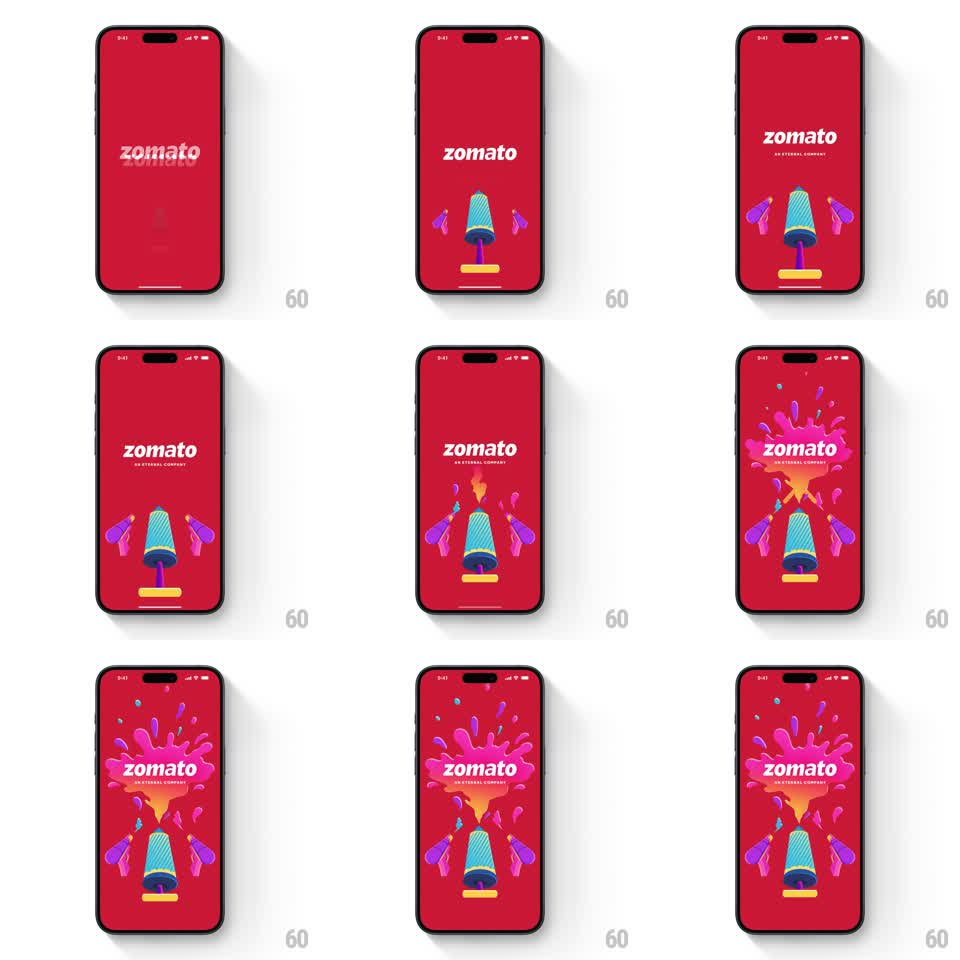

Media
Frame-by-frame

Rebuild this animation 1:1: Zomato's Holi splash - a pichkari rises under the wordmark, side water guns take position, and a huge pink-orange color splash bursts over the logo with droplets raining down.

Rebuild this animation 1:1: Zomato's Holi splash - a pichkari rises under the wordmark, side water guns take position, and a huge pink-orange color splash bursts over the logo with droplets raining down. ## Integration Integration: stack-agnostic spec - springs given as stiffness/damping, timed motions as duration + curve; map every value to your framework and animation library of choice. ## Scene Zomato red splash: the white "zomato" wordmark center with "AN ETERNAL COMPANY" beneath. The festive layer: a striped pichkari (water gun) standing on a base below the wordmark, two smaller purple water guns flanking it, and a big pink-orange gulaal splash that erupts over the wordmark. ## Motion spec Pattern: festive burst sequence - rise, aim, splash, settle. - The pichkari rises from below into place (translateY 60 -> 0, spring ~280/14) with the two side guns sliding in from the edges 150ms later (translateX +/-40 -> 0, spring). - Beat: all three guns tilt back 5 degrees (150ms) - aiming. - The splash bursts from behind the wordmark: a radial pink-orange splat scaling 0 -> 1 (spring ~300/12, fast and juicy) with 12-16 droplets flying outward (arcs with gravity, 500-700ms, varied sizes). - Droplets that fly high fall back and land as small dots around the guns (fade in at their landing points, 200ms). - The wordmark stays crisp in front of the splash; the splash's center sits just behind the text. - Final hold: everything still, one droplet occasionally dripping down the splash (translateY, 1s, every ~3s). ## Calibration - Festival energy: the burst is fast (under 400ms to full size) and the droplets are chunky, not mist. - Palette discipline: zomato red ground, pink-orange splash, teal-striped pichkari, purple side guns - no other colors. ## Reduced motion Pichkari and splash fade in composed (400ms); no droplet flight. ## Don't miss - The splash masks behind the wordmark cleanly - text is never obscured. - The side guns mirror each other's tilt exactly; the center pichkari stays vertical.